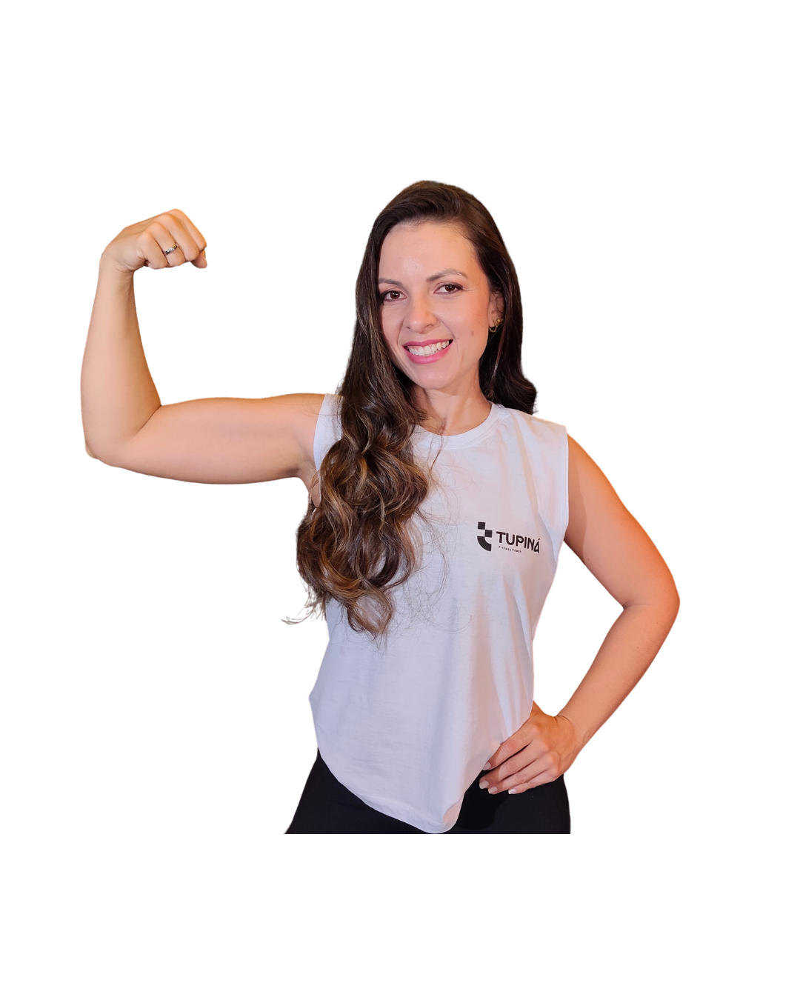

Consultoria online de treino, nutrição e saúde
Evolua sem recomeçar toda semana.
Treino, nutrição e ajustes contínuos para encaixar evolução na sua rotina real, com direção profissional do primeiro contato aos próximos resultados.
Estratégia + acompanhamento
Você sabe o que fazer, executa com clareza e ajusta a rota antes de abandonar o processo.
Formato
100% online
avaliação, plano e ajustes pelo celular
Método direto
O problema não é vontade. É falta de plano que acompanhe sua vida.
O Team Tupiná une treino, nutrição e saúde em uma estratégia prática para sair do ciclo de começa, para e recomeça.
Diagnóstico antes do plano.
Rotina, objetivo, histórico e limitações definem o ponto de partida.
Execução sem confusão.
Você recebe treino e alimentação com orientação clara para fazer no celular.
Ajuste antes da desistência.
Quando a rotina muda, o plano muda junto para preservar constância.
Equipe integrada
Isa lidera. A equipe alinha treino, nutrição e saúde.
Menos orientação solta. Mais decisão técnica para cada fase da sua evolução.
Treino
Nutrição
Saúde
Recuperação
Personal trainer
Treino para objetivo, técnica e rotina.
Nutricionista
Alimentação para resultado e aderência.
Médico do esporte
Leitura de saúde e performance.
Fisioterapeuta
Prevenção, recuperação e movimento.
Jornada guiada
Um plano que sai da conversa e entra na rotina.
Você não recebe uma promessa solta. O Team Tupiná organiza o ponto de partida, transforma objetivo em plano e acompanha os ajustes quando a vida real aparece.
Triagem individual
Plano aplicável
Ajustes contínuos
Processo em 3 passos
Do diagnóstico ao acompanhamento.
Mapeamos seu momento.
Objetivo, rotina, histórico e travas entram na avaliação para o plano nascer possível.
Você recebe direção clara.
Treino, alimentação e prioridades chegam organizados para executar sem adivinhar.
A rota evolui com você.
Dúvidas, semanas difíceis e estagnações viram ajuste, não abandono do processo.
Resultado esperado
Mais constância, menos recomeços.
Prova social
O que muda quando existe acompanhamento.
Mais clareza para executar, mais suporte para continuar e menos abandono quando a rotina sai do ideal.
O próximo passo fica óbvio.
O aluno entende o que fazer e por que ajustar.
Dúvida não vira pausa.
Travas da semana recebem uma resposta prática.
Menos extremos. Mais repetição.
O plano fica possível de manter por mais tempo.

R$ 42 lançamento
20 min por dia
7 dias de execução
Infoproduto de entrada
RESET 7: volte ao ritmo em 7 dias.
Treino de 20 minutos, alimentação simples e roteiro diário para sair da inércia hoje.
Produto digital · acesso imediato · garantia de 7 dias pela plataforma.
01
Treino de 20 min
Execute em casa ou na academia.
02
Alimentação possível
Escolhas simples sem radicalizar.
03
Começo com garantia
Acesso imediato e 7 dias para testar.
Próximo passo
Comece com uma conversa simples.
Conte seu objetivo e sua rotina. O Team Tupiná indica a melhor entrada para você começar com direção.
1. Envie seu objetivo
2. Receba orientação inicial
3. Comece com direção
WhatsApp oficial
Fale direto com o Team Tupiná
Atendimento rápido para entender seu momento.
Começar conversa+55 38 9167-5531 · Resultados variam conforme rotina, aderência e contexto individual.
